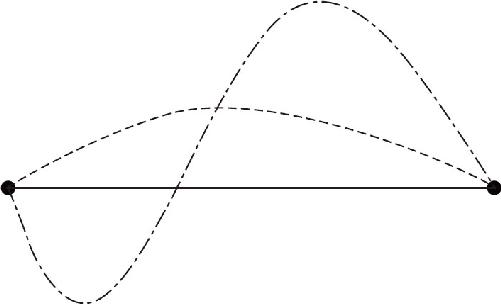

要欣赏数学的美，有两种方式：一是通过简单的过程解决复杂的问题，用诗词形容就是“谈笑间，樯橹灰飞烟灭”，它会带给人一种痛快淋漓的感觉．二是通过复杂的过程来证明一个简单的道理，用诗词形容就是“众里寻他千百度，蓦然回首，那人却在灯火阑珊处”，这种方式会让人感受到数学的奇妙莫测之美．为什么还会有人通过复杂的方式去证明一个简单的道理呢？这是因为在实际生活中，我们的身边随时随地充斥着大量似是而非的道理．
比如，我们相信“人的本性是善良的”，我们相信“只要付出就会有回报”，我们相信“正义一定会战胜邪恶”．很多时候，我们之所以相信一个道理，并不是因为这个道理正确，而仅仅是因为它恰好代表了我们的良好意愿．我们认为只有相信这些道理才会使自己积极向上，才会使生活变得更加美好．实际上，这种观点和“只要相信上天，上天就一定会保佑你”没有任何的区别．
这些似是而非的话，全部来源于我们自己的一厢情愿．甚至我们还会产生更加莫名其妙的理论：因为一个习惯保持了几千年，所以肯定有它存在的道理；因为这个话出自某个经典著作，所以它一定是对的；因为唐僧经历了九九八十一难，所以他取来的就一定是真经．凡此种种，不一而足．这些世俗的观点使人确信：只有愚昧的人才缺乏怀疑精神，只有无知的人才会不问缘由．相反，只有渊博如老子的人才知道自己的无知，只有谦虚如苏格拉底的人才会对一个简单的问题不厌其烦地追问下去．
人的一生能不能做出自己的成就是难以预料的，然而人的一生是否在无知中度过却几乎完全取决于自己．要想让自己的一生在光明中度过，就不能盲目相信任何一个道理，无论这个道理看上去多么简单、多么直白，也必须要经过理性的检验．而要检验一个理论，只依靠部分的事实验证是站不住脚的．最简单有效的办法就是依靠逻辑推理．比如，流传很久的比萨斜塔上的自由落体实验，其实就只是一个伽利略的思想实验．
此前亚里士多德曾经告诉我们，重的物体下落得快，轻的物体下落得慢．而且，他还以羽毛和石头的下落过程为例对此做出了证明．如果你按亚里士多德的方式去检验，无论你试验多少次，都会发现石头下落的速度比羽毛要快．但伽利略没有做实验，他只是用自己的理性做了一下推理，通过反证法证明了亚里士多德的这个结论是错误的．
假设一块石头1千克，另一块石头10千克，那么按照亚里士多德的理论，10千克的石头下落会快一些，这没什么问题．但是，如果我把10千克的石头和1千克的石头绑在一起再次抛落，又会发生什么情况呢？从总重量来看，它们的和是11千克了，应该下落得更快才对；然而从另一个角度来看，这1千克的石头会比10千克的石头下落得慢，所以在下落途中它一定会拖拉那个10千克的石头，使10千克的石头下落得比之前更慢了，这就像一个成年人拉着一个孩子一起赛跑，他们一起跑步的速度，肯定不如成年人自己跑快．这样看来，无论11千克的石头下落得更快还是下落得更慢，都是不对的，两者之间发生了矛盾，因此亚里士多德的理论一定是错误的，这就是逻辑推理的结果，完全无须实验的帮助．
伽利略之所以能够发现真理，并不是因为物理世界有什么特殊性，而恰恰是因为隐藏在物理世界背后的，是严谨的数学逻辑．接下来，我们就一起探索一个最简单的定理，一起感受一下几何学逻辑推理的魅力．那就是：两点之间，直线段最短．
这同样是一个非常浅显、非常直白的道理．向别人提出这个问题的人，不仅不会受到尊重，往往还会遭受别人的耻笑．不过，要把这个直线段最短的问题说清楚，确实还得费不少工夫．
为什么这个问题很难呢？因为两点之间可以存在无数条路线，而且什么样的形状都有，要想画出一个通用的、能够代表所有线路的图形是不可能的，那我们又怎么证明呢？把这两个点和连接它们的直线段都画出来，然后我们得把所有可能的路线都简单抽象一下，给它们分个类，根据不同类别分别讨论．怎么分类呢？
简单来说，连结两点的线路之中，有一些曲线只在这个直线段的一侧，而另一些曲线围着直线绕来绕去，就像S形一样，它会穿过我们中间这条直线．（如图5－6所示）显然，后者的这种情况比较复杂，需要对S形的曲线做一下简化．我们可以分段来讨论：由于S形线路会把线段截成几段，如果其中每一段曲线都比对应的线段长，那么，我们就可以认为，把这些曲线加起来的总长度仍然比线段的总长度长．这样一来，我们就可以把穿过直线的这种S形的曲线，变成只朝向一边的弓形曲线来看待．换句话说，我们只要证明了弓形曲线中，绕弯儿的那根曲线比直线段长就可以了．

图5－6